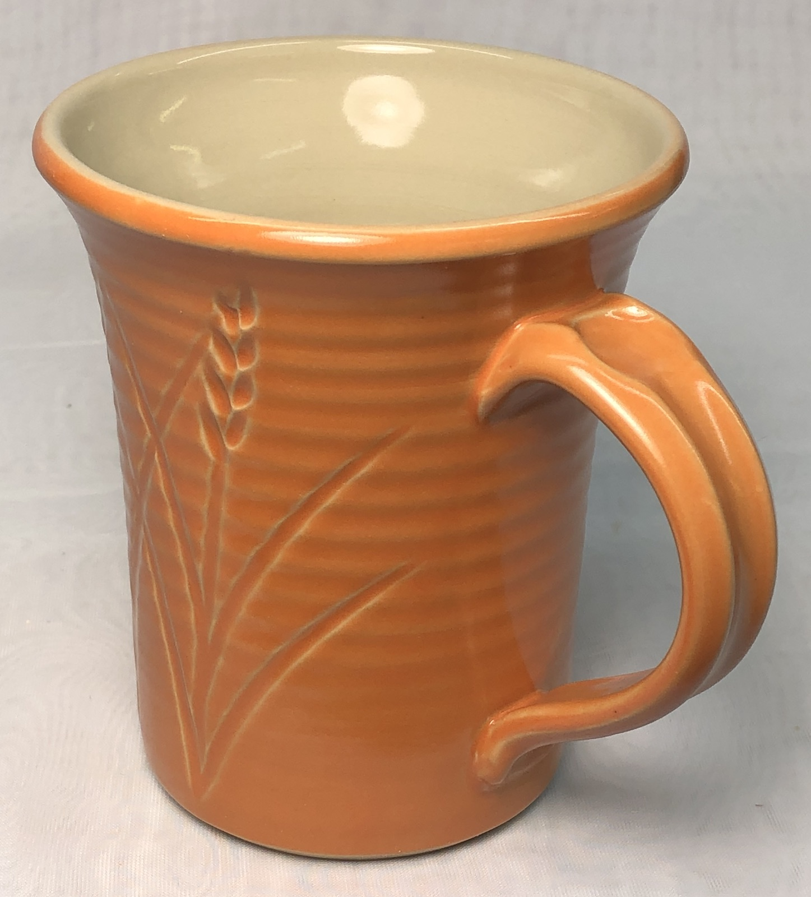
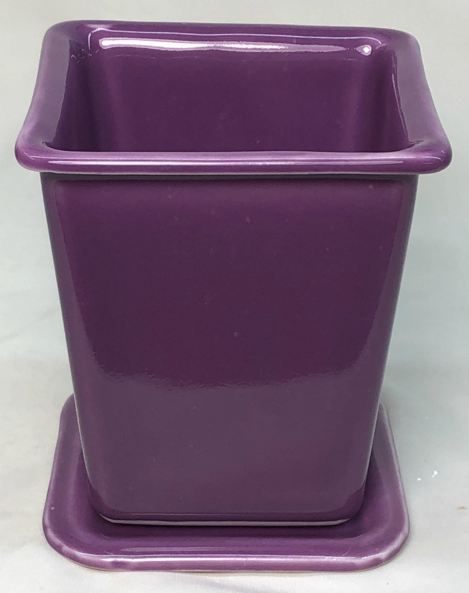
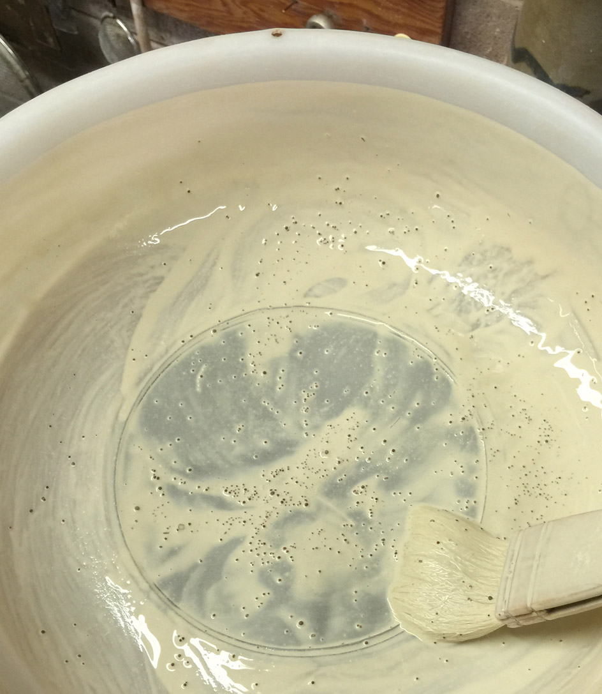
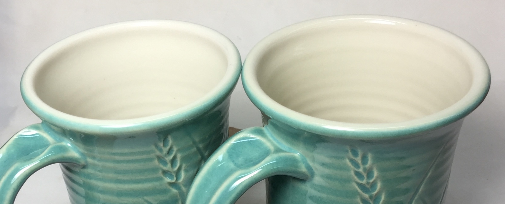
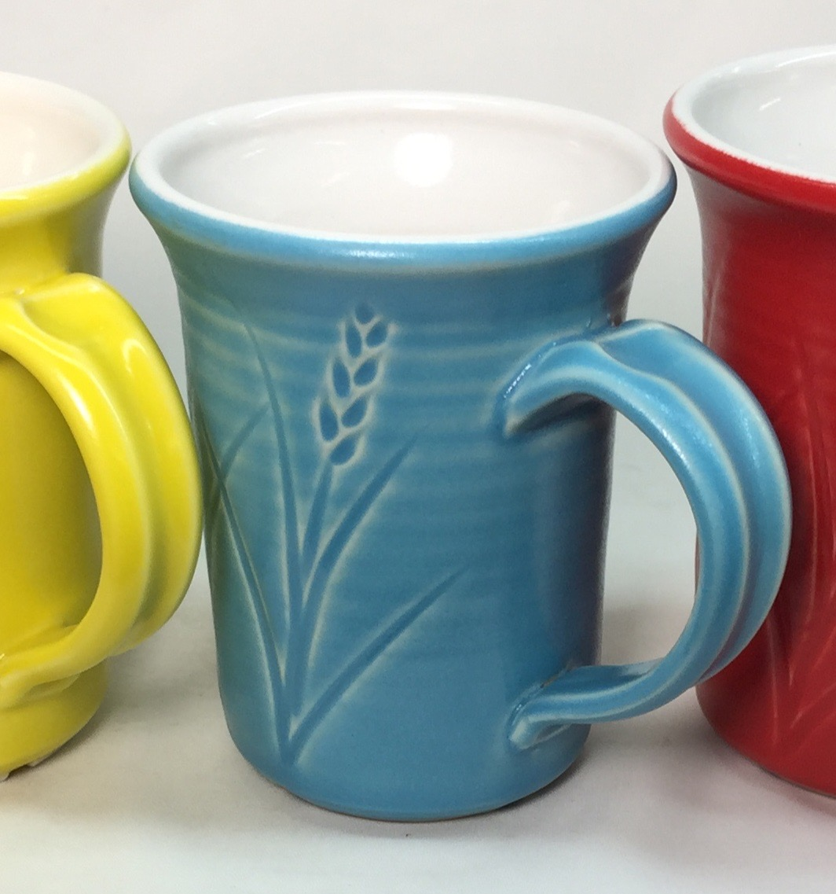
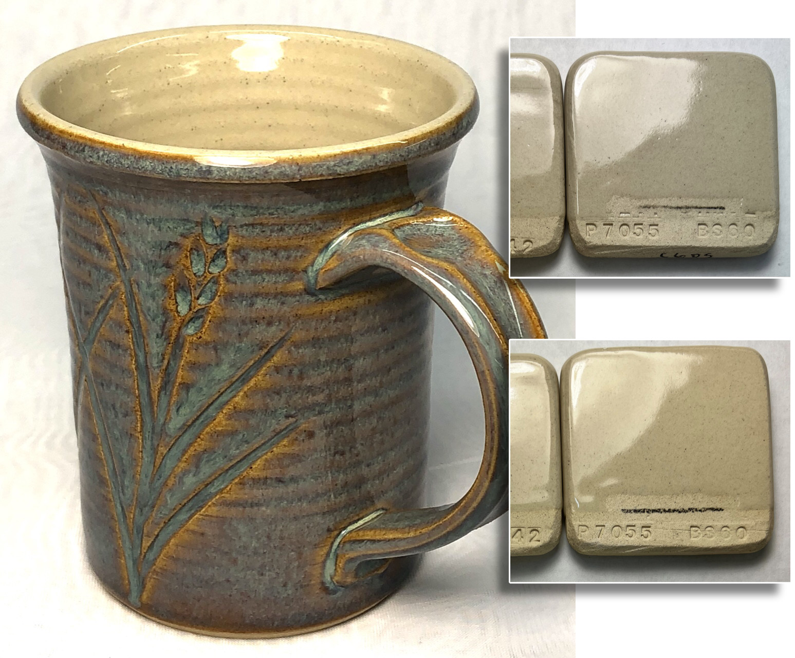

CELECG - Celestite Crystalline Glaze
FAAO - Fa's All-Opaque Crystalline Glaze
FAC5 - Crystal Number Five Glaze
FO - Octal Crystalline Glaze
G1214M - 20x5 Cone 6 Base Glossy Glaze
G1214W - Cone 6 Transparent Base
G1214Z1 - Cone 6 Silky CaO matte base glaze
G1215U - Low Expansion Glossy Clear Cone 6
G1216L - Transparent for Cone 6 Porcelains
G1216M - Cone 6 Ultraclear Glaze for Porcelains
G1916Q - Low Fire Highly-Expansion-Adjustable Transparent
G1947U - Cone 10 Glossy transparent glaze
G2000 - LA Matte Cone 6 Matte White
G2240 - Cone 10R Classic Spodumene Matte
G2571A - Cone 10 Silky Dolomite Matte glaze
G2826R - Floating Blue Cone 5-6 Original Glaze Recipe
G2826X - Randy's Red Cone 5
g2851H - Ravenscrag Cone 6 High Calcium Matte Blue
G2853B - Cone 04 Clear Ravenscrag School Glaze
G2896 - Ravenscrag Plum Red Cone 6
G2902B - Cone 6 Crystal Glaze
G2902D - Cone 6 Crystalline Development Project
G2916F - Cone 6 Stoneware/Whiteware transparent glaze
- Cone 6 Whiteware/Porcelain transparent glaze
G2926J - Low Expansion G2926B
G2928C - Ravenscrag Silky Matte for Cone 6
G2931H - Ulexite High Expansion Zero3 Clear Glaze
G2931K - Low Fire Fritted Zero3 Transparent Glaze
G2931L - Low Expansion Low-Fire Clear
G2934 - Matte Glaze Base for Cone 6
G2934Y - Cone 6 Magnesia Matte Low LOI Version
G3806C - Cone 6 Clear Fluid-Melt transparent glaze
G3838A - Low Expansion Transparent for P300 Porcelain
G3879 - Cone 04 Transparent Low-Expansion transparent glaze
GA10-A - Alberta Slip Base Cone 10R
GA10-B - Alberta Slip Tenmoku Cone 10R
GA10-D - Alberta Slip Black Cone 10R
GA10x-A - Alberta Slip Base for cone 10 oxidation
GA6-A - Alberta Slip Cone 6 transparent honey glaze
GA6-B - Alberta Slip Cone 6 transparent honey glaze
GA6-C - Alberta Slip Floating Blue Cone 6
GA6-D - Alberta Slip Glossy Brown Cone 6
GA6-F - Alberta Slip Cone 6 Oatmeal
GA6-G - Alberta Slip Lithium Brown Cone 6
GA6-G1 - Alberta Slip Lithium Brown Cone 6 Low Expansion
GA6-H - Alberta Slip Cone 6 Black
GBCG - Generic Base Crystalline Glaze
GC106 - GC106 Base Crystalline Glaze
GR10-A - Pure Ravenscrag Slip
GR10-B - Ravenscrag Cone 10R Gloss Base
GR10-C - Ravenscrag Cone 10R Silky Talc Matte
GR10-E - Alberta Slip:Ravenscrag Cone 10R Celadon
GR10-G - Ravenscrag Cone 10 Oxidation Variegated White
GR10-J - Ravenscrag Cone 10R Dolomite Matte
GR10-J1 - Ravenscrag Cone 10R Bamboo Matte
GR10-K1 - Ravenscrag Cone 10R Tenmoku
GR10-L - Ravenscrag Iron Crystal
GR6-A - Ravenscrag Cone 6 Clear Glossy Base
GR6-B - Ravenscrag Cone 6 Variegated Light Glossy Blue
GR6-C - Ravenscrag Cone 6 White Glossy
GR6-D - Ravenscrag Cone 6 Glossy Black
GR6-E - Ravenscrag Cone 6 Raspberry Glossy
GR6-H - Ravenscrag Cone 6 Oatmeal Matte
GR6-L - Ravenscrag Cone 6 Transparent Burgundy
GR6-M - Ravenscrag Cone 6 Floating Blue
GR6-N - Ravenscrag Alberta Brilliant Cone 6 Celadon
GRNTCG - GRANITE Crystalline Glaze
L2000 - 25 Porcelain
L3341B - Alberta Slip Iron Crystal Cone 10R
L3685U - Cone 03 White Engobe Recipe
L3724F - Cone 03 Terra Cotta Stoneware
L3924C - Zero3 Porcelain Experimental
L3954B - Cone 6 Engobe (for M340)
L3954N - Cone 10R Base White Engobe Recipe for stonewares
MGBase1 - High Calcium Semimatte 1 (Mastering Glazes)
MGBase2 - High Calcium Semimatte 2 (Mastering Glazes)
MGBase3 - General Purpose Glossy Base 1 (Mastering Glazes)
MGBase4 - Glossy Base 2 Cone 6 (Mastering Glazes)
MGBase5 - Glossy Clear Liner Cone 6 (Mastering Glazes)
MGBase6 - Zinc Semimatte Glossy Base Cone 6
MGBase7 - Raspberry Cone 6 (Mastering Glazes)
MGBase8 - Waxwing Brown Cone 6 (Mastering Glazes)
MGBase9 - Waterfall Brown Cone 6 (Mastering Glazes)
TNF2CG - Tin Foil II Crystalline Glaze
VESUCG - Vesuvius Crystalline Glaze
Insight-Live Shares
77C04E - 50:30:20 Frit 3134 cone 6 base
77E05B - Cone 10R Celadon - Luke Lindoe
77E06B - Lindoe Dark Celadon - Lower COE
77E14A - Cone 10R Red Mustard - Luke Lindoe
77E15A - Cone 10R Yellow Mustard - Luke Lindoe
84-G-05-S - Cone 10R Matte Crystal Iron - Luke Lindoe
G 304 - Cone 10R Crystal Iron Brown - Luke Lindoe
G1002 - LEACH'S CELADON CONE 10R
G1129 - MEDALTA CLEAR GLAZE CONE 8-10
G1214M - Hansen 20x5 Clear Cone 6 Base Glaze
G1214Z - Cone 6 Calcium Matte Base Glaze
G1214Z1 - Cone 6 Calcium Matte v2
G1214Z2 - Cone 6 Calcium Matte + TiO2
G1847 - Cone 10R Robin's Egg Blue
G1916M - COE Adjustable Low Fire Clear Glaze
G1916Q - Cone 05+ Expansion Adjustable Gloss Base
G1916Q2 - G1916Q glaze + 5% silica
G1916Q3 - G1916Q glaze + 10% silica
G1916QL - Cone 05+ Low Expansion Transparent glaze
G1916QL1 - Cone 05+ Lower Expansion glaze
G1916S - Cone 06-04 MgO Matte
G1916S1 - Cone 06-04 MgO (using talc)
G1916V - Cone 2 Clear (based on G1916Q)
G1916W - G1916Q with Iron Fining Agent
G1947U - Cone 10/10R Transparent Base
G2415E - Classic Albany Lithium Brown Glossy
G2415J - G2415E Alberta Slip Brown (less Li)
G2571A - Original Cone 10R Silky Matte Base Recipe
G2571B - Cone 10R Silky Matte Base (improved)
G2571BB - G2571B Rutile Bamboo
G2571C - Cone 10R Silky Matte Blue
G2571D - Cone 10R Silky Matte Red
G2571D1 - Cone 10 Marbled Red Glaze
G2571E - Cone 10R Silky Matte Black
G2576B - Cone 10R Tenmoku Glossy
G2584 - Cone 10R Blue Celadon
G2826A - 50:30:20 Gerstley Borate Cone 6 base
G2826A1 - 50:30:20 Frit 3134 base (fixed)
G2826A2 - 50:30:20 Gillespie Borate Cone 6 base
G2826A3 - 50:30:20 GB Makeover Pottery Glaze
G2826B - GB:Frit Raku Glaze
G2826F - GB Honey Amber 04
G2826G - GB Lavendar Satin Glaze Cone 6
G2826M - Gerstley Borate Antique Green Cone 5
G2826N - Gerstley Borate Raku Base NS/GB
G2826R - Floating Blue Original Cone 6 Glaze
G2826R1 - Floating Blue Using Gillespie Borate
G2826U - Floating Blue using Frit 3134
G2826V - Gerstley Borate Cream Oatmeal Cone 6 recipe
G2850C - Ravenscrag Cone 6 Black Glossy
G2850M-C - Ravenscrag Cone 6 Light Blue Matte
G2850P - TEAL BLUE CONE 6 KAT
G2851A - RAVENSCRAG SLIP Matte Blue - Cone 6
G2851AB - RAVENS FLOATING BLUE Cone 6
G2851D - KAT'S RC MATTE - Cone 6
G2851H - RAVENSCRAG Brown Gold Matte Cone 6
G2880 - Alberta Slip Tenmoku #1
G2880A - Alberta Slip Tenmoku #2
G2881B - Ravenscrag Alberta Slip Celadon
G2890B - Randy's Red Original Cone 6 Glaze
G2894 - Ravenscrag Tenmoku #1
G2894A - Ravenscrag Tenmoku #2
G2908A - Alberta Slip Floating Blue
G2917 - Ravenscrag Floating Blue
G2926 - Perkins Clear
G2926A - Perkins Clear with Frit 3134
G2926B - Cone 6 Clear Glossy Base
G2926BL - G2926B Cone 6 Gloss Black
G2926J - G2926B Reduced COE (Li2O)
G2926S - G2926B Reduced COE (MgO)
G2931 - Worthington Cone 06-2 Clear
G2931F - Zero3 Ulexite Transparent Glaze
G2931G - Zero3 G Low Expansion Low Fire Clear
G2931H - Zero3 H High Expansion Variant
G2931K - Zero3 K Cone 03 Transparent Glaze
G2931L - Zero3 L Low Expansion Variant
G2931L2 - Zero3 L Low Expansion w/F-69
G2932 - Deb's Clear #1 Cone 04-02
G2932A - Deb's Clear #2
G2933 - Gerstley:PV Clay low fire clear
G2934 - Cone 6 Magnesia Matte Base
G2934A - High Dolomite-Testing glaze
G2934BL - G2934 85:15 Adjustable Matte Black
G2934J - G2934 with ZnO for Brown Stains
G2934J1 - G2934 (glossed using ZnO)
G2934Y - G2934 (lower-LOI)
G2934Y1 - G2934Y (Anti-Crawling)
G2934Y2 - G2934Y (Higher COE/Stony)
G2934Y3 - G2934 Super Durable
G2934Y4 - G2934 Super Durable #2
G2934Z - G2934Y Red Using F-69
G2936 - Ravenscrag Low Expansion Cone 6 Base
G2936B - Ravenscrag Low Expansion White Base 2
G2936C - Ravenscrag Original Cone 6 Base Glaze
G2938 - Wright's Water Blue Base
G2941A - Leach's Satin Clear Original
G2941C - Leach's Satin Clear - Craze fix
G3806 - Panama Blue Cone 6
G3806A - Panama Blue 2 - More clay, Copper Oxide
G3806B - Panama Blue 3 - Copper Carbonate
G3806C - Panama Cone 6 Adjustment 2015
G3806D - Panama c6 - Lower COE #1
G3806E - Panama c6 - Lower COE #2
G3806F - Panama c6 - Lower COE #3
G3806K - Panama c6 - Lower COE #7
G3806N - C6 Fluid Clear Final Recipe #10
G3808 - Cone 6 Bright Clear - Shaun Mollonga
G3808A - Cone 6 Bright Clear using Frits
G3813 - Campana Cone 6 Transparent Glaze
G3813B - Campana Clear Lower Expansion #2
G3813C - Campana Clear Low Expansion (no Spodumene)
G3814 - Low Zinc High Feldspar Fritless base
G3822 - Spectrum Clear 700 Dipping Glaze
G3834 - Tenmoku Cone 6
G3840 - Shino Trial Number 1
G3868 - Gold - Cone 6
G3868A - Gold Using Spodumene
G3868B - Gold Using Fusion Frit 493
G3868C - Gold Using Frit #2
G3875 - Tangerine 4 (Orange)
G3875B - Zinc Clear cone 6
G3875C - Tangerine + Orange Stain
G3879 - Cone 04+ UltraClear Glossy Base
G3879C - Cone 04 UltraClear Low-Expansion
G3879E - Cone 04+ UltraClear Glossy Base
G3879F1 - Cone 04+ UltraClear Glossy Base
G3888 - Kieth Davitt High-fluid-melt copper blue
G3892 - Val Cushing Satin White #71
G3903 - Alberta Slip + Frit FZ-16
G3904 - Original Recipe Using Frit 3124
G3904A - 3134 Mistake Recipe Fixed
G3909 - Ravenscrag Cone 10R Matte Blue
G3910 - Fritted version of G1947U #1
G3910A - Fritted version of G1947U #2
G3912A - Surface Tension White Tin
G3914A - Alberta Slip Gloss Black
G3918 - Red Mustard in G2571A Base #1
G3925 - Perfect Clear
G3925B - Perfect Clear Make-Over #1
G3926B - G2926B with Tin/Zircopax
G3926C - G2934 White Tin/Zircopax
G3933 - G2934:G2926B Oatmeal - Cone 6
G3933A - G2934:G2926B Oatmeal Cone 6
G3933E - G3933 Oatmeal Ravenscrag #2
G3933EF - G3933 Oatmeal Ravenscrag #4
G3933G1 - G3933 Oatmeal Alberta Slip + Li
G3939A - Cone 6 Oxidation Marbled Red
G3948 - Red Orange Glazy Original
G3948A - Plainsman Iron Red Orange
G3948A1 - Red Orange - Plainsman Spodumene
G3948A3 - Red Orange - Plainsman Spodumene #2
G3955 - N505 Base Satin White - Opaque
G3966 - Cone 10R S2 - Luke Lindoe
G3971 - Lead Bisilicate Glaze
G3973 - Hilda Ross Rust
G4546 - Pattis Crystal Clear Cone 6
G4594 - 3B as a glaze
GA6-A - Oringal Alberta Slip Amber/Honey base
GA6-F - Alberta Slip Cone 6 Oatmeal
GR10-A - Ravenscrag Cone 10R Transparent Base
GR10-C - Ravenscrag Talc Matte
GR10-CW - Ravenscrag Cone 10R Talc Matte White
GR6-H - Ravenscrag Cone 6 Oatmeal
H0009 - 1945 MEDALTA FILTER CAKE
L2553B - Imco Carbondale Clay - C-Red
L2596E - H550 Casting Body #5
L2596F - H550 Casting Body #6
L2596G - H550 Casting Body #8
L2626 - Barnard Slip
L3127E - Boraq 1
L3127G - Boraq 2
L3127I - Boraq 3
L3127N - Boraq 5 #4 (available materials)
L3146A - Foundry Hill Creme+Nepheline
L3146B - New Foundry Hill Creme
L3146C - FHC + Kyanite
L3146D - FHC + Pyrax
L3164A - Cordierite Flameware - more bentonite, added grog
L3500 - Alberta Slip Original cone 6 base glaze
L3500G - Alberta Slip + Frit 3249
L3500H - Alberta Slip + Frit 3249 and Silica
L3523 - Cone 04 Gerstley Borate matte base
L3523A - Compare Boraq 5 #1 with GB in a glaze
L3523B - L3523 glaze using Boraq 5 L3127L
L3523C - L3523 glaze using Boraq 5 L3127M
L3523D - L3523 recipe using Boraq 5 L3127N
L3617 - Cornwall Stone substitute #2
L3619 - Cornwall Stone Average Analysis
L3660C - Flameware - Very High Pyrax with Molochite
L3660G - Pyrax/Kaolin Flameware
L3660P - Pyrax Flameware (low fire)
L3664A - PV CLAY Feb 2013 Shipment
L3673 - Laguna Barnard Slip Sub
L3685U1 - Zero3 Engobe Recipe
L3685Y - Cone 03 Terrastone 2 Engobe
L3685Z2 - Z2 White Cone 04 Engobe Base (no frit)
L3685Z3 - Z3 White Cone 04 Engobe (5% frit)
L3685Z5 - White Cone 04 Engobe for L4170B (3% frit)
L3685Z6 - Brown Engobe for Snow
L3685Z7 - Cone 04 Brown Engobe for Snow
L3685Z8 - White Cone 2 Engobe for L215, L210, L4170B (2% frit)
L3693E - Alumina Lining for Crucibles
L3693E1 - Zircon Lining for Crucibles
L3693H1 - Plastic Refractory Alumina Body H1
L3724M1 - Redart Fritware #4
L3724M2 - Redart Fritware #5
L3724N - Redart Fritware #1
L3724N2 - Zero3 Stoneware
L3724P - Redart Fritware #2
L3728 - Cone 6 Dolomite Testing Glaze
L3778D - Cone 6 Translucent Grolleg Plastic
L3778D1 - Cone 6 Grolleg Pink/Blue Porcelains
L3778G - Cone 6 Translucent Grolleg Casting
L3798C - M340 Casting Body
L3798G - M340C Casting Body Revision 7
L3802E - Crystal Ice - Cone 10
L3806L - Panama c6 - Lower COE #8
L3840 - Diatomaceous Earth (Ant Killer)
L3868 - Craft Crank - From PotClays, UK
L3868A - Craft Crank - Base
L3868C - Craft Crank Clone 2
L3869 - Crank Industrial - From England
L3869A - Industrial Crank Base
L3894D - PV Calc Mix 4
L3906 - P300 Cone 6 Casting Body
L3911 - Bizen Clay
L3916 - Bizen Duplicate using Plainsman Materials
L3924C - Zero3 Porcelain - Experimental
L3924J - Zero4 Plastic Porcelain
L3924L - Zero4 Casting Porcelain
L3954B - Cone 6 White Engobe Recipe
L3954F - Cone 6 Black Engobe
L3954J - Black Cone 10 Whiteware Engobe Recipe
L3954N - Cone 10 Engobe for H550
L3954R - Super-White Engobe for Cone 6
L3954S2 - White Engobe for M340, M390, L215, L210
L3972 - 98 Mix
L3977 - BGP Low Stoneware Body
L4001 - Plainsman Super Kiln Wash
L4005D - M390 Casting Version 5
L4023F - Proposed H440 Casting Body #5
L4028 - G2571A Rutile Bamboo
L4053B - Cone 6 Black Clay Body - Type 1
L4068 - Barnard Chemical Substitute
L4115J3 - L211 Stnwre 3D:OM4:NS
L4115L2 - L211 3D:OM4:NS:Talc 42 mesh
L4115L2a - L211 3D:OM4:NS:Talc 80 mesh
L4158 - Cimtalc 15 Talc lab test
L4159 - Cimtuff 9115 Talc lab test
L4163 - Red Art Cone 1 Clay Body
L4168G5 - H440C (concentrate) #5
L4168G9 - New H440 Functional Proposal #8
L4170 - L215 Terra Cotta Casting #1
L4170B - Terra Cotta Casting #2
L4170F - Terra Cotta Casting #3
L4208C - MNS Cone 6 Fine Stoneware
L4208D - 3B +200# particles sieved out
L4217G - M370-like Cone 6 Faster Casting
L4227 - Plus Clay
L4228 - Fimo Clay
L4237 - Redart Tile Body
L4239 - H550 Casting Body #7
L4244 - BGP Clay:Flyash F 50:50 Mix
L4244A - Flyash F:Bentonite 10:90
L4245 - LaFarge Fly Ash F:Bentonite 95:5 Mix
L4245F - Fly Ash F:Bentonite:BallClay 80:10:10
L4246 - A2 +200# particles sieved out
L4247 - A3 +200# particles sieved out
L4248 - Old Hickory M23 Ball Clay
L4249 - 3D +200# particles sieved out
L4249A - 3D MNS 325 Mesh
L4249B - 3D 100 mesh
L4264 - Raku Crackle Glaze Base - Frit 3110
L4264A - Raku Glaze Base #1
L4264B - Raku Glaze Base #2
L4264C - Raku Glaze Base #3
L4264D - Raku Glaze Base #4
L4273 - G3806N1 + 2% Zircopax
L4280 - L215 : M390 Mix for Cone 1 Stoneware
L4287 - Midfield Clay Yukon
L4287A - Catchment Clay Yukon
L4292 - Monte Marte Air Hardening Clay
L4293 - DAS Air Drying Clay
L4294 - Sculpey PE08 Oven Bake Clay
L4398 - Ravenscrag Cone 6 Raspberry
L4404A - Refractory Casting Slip
L4404B - Plastic Refractory (heavy duty)
L4404C - Refractory Plastic (low expansion)
L4404D - Refractory Casting (low expansion)
L4410L - L213 NS:Dolo 30:20
L4410P - L213 40:10 Dolo/NS
L4421 - Seed pelleting clay and binder
L4441A - Minspar
L4441B - Minspar Calculated Substitute
L4453C - 3D:A2 Body Base H550 Blend
L4458 - Lithium Flameware Test
L4482B - Alumina Wadding #2
L4484D - 2018 3B+6% 6666 at 100#
L4498 - Low Expansion Super White Cone 6 Fritware
L4498A - Low Expansion Fritware Casting
L4530 - Carbondale M390 #1
L4530A - Carbondale M390 #2
L4532A - Pyrometric cone pressing body #2
L4532B - Cone pressing body #3
L4532D - Cone pressing body #5
L4532F - Cone 5 Cone-casting v.1
L4543 - Firebrick & kiln post/shelf clay - v1.0
L4543B - Firebrick & kiln post clay v2.0
L4543C - Refractory kiln post clay v4.0
L4557 - Volumetric Screw Feeder Design - ESP32 based
L4558 - M390 Casting (M370+C-Red)
L4558A - M390 Cone 6 C-Red Casting #1
L4558B - M390 Cone 6 C-Red Casting #2
L4567 - Cat Litter
L4575 - SIAL Refractory Slip
L4575A - SIAL refractory slip Duplicate
L4588 - Red NZK Cone 6 Porcelain
L4597 - Luke Lindoe Fired Samples
L4599 - Slip for Slipware
L4599A - Slip for Slipware - #5 Ball Clay
L4608 - Kyanite Bisque-Fix, Kiln-Patch
L4655 - Titanium Dioxide in GA6-C
L4655A - GA6-C Titanium + Iron
L4655B - GA6-C Lower Thermal Expansion
L4696 - Cordierite Flameware
L4697 - Flameware body from French mfgr
L4705A - GA6-C Using Frit 3195 and Titanium
L4768D - Cone 6 Black Casting Body - Type 2
L4768E - Cone 6 Black Casting Body - Type 3.1
L4768H - Cone 6 Black Casting Body - Type 3.3
L4807 - M370-like Super-Fast Casting Porcelain
MHSCUL - MASTER RedArt Sculpture Clay
MRG6B - G2850A Ravenscrag Cone 6 Light Blue
MRG6C - Ravenscrag Cone 6 White Glossy
MRG6E - G2850P Ravenscrag Cone 6 Raspberry
MRG6G - G2851H Ravenscrag Cone 6 Light Blue Matte
P4738A - 98 BGP RETEST
P4808 - 45D
P5867 - Sculpture Clay
P6385 - M2 ST
P6821 - L215 Production Run - Mar 2020
P7088 - H440
PC-32 - Amaco Glaze: PC-32 Albany Brown
Insight-Live Shares (also referencing this recipe)
These add technical detail, development info, variations and improvements.
G2926B - Cone 6 Whiteware/Porcelain transparent glaze
Modified: 2025-04-05 03:06:45
A base transparent glaze recipe created by Tony Hansen, it fires high gloss and ultra clear with low melt mobility.
| Material | Amount | Percent |
|---|---|---|
| Nepheline Syenite | 18.30 | 16.6 |
| Ferro Frit 3134 | 25.40 | 23.1 |
| EPK | 19.60 | 17.8 |
| Wollastonite | 6.90 | 6.3 |
| Silica 325 mesh | 37.60 | 34.2 |
| Talc | 2.30 | 2.1 |
| 110.10 | 100 | |
Notes
A cone 6 transparent general-purpose base recipe developed by Tony Hansen (see link to go there below, it contains technical and mixing information about the recipe). This page contains technical and mixing information about the recipe, their page, under code MG6CG, contains mixing and usage information. Page shares at Insight-live.com have information on the development of this from the original recipe (as well as adjustmentsto lower thermal expansion e.g. G2926S).
This is an adjustment to Perkins Studio Clear G2926A (this contains much more SiO2 and uses a frit instead of Gerstley Borate as the boron source). It is just as glossy and transparent, has a less fluid melt (thus will be more durable). With this change, this is a really stunning transparent glaze. We have found that this will even tolerate 5% more silica, yet still smooths out well (more silica produces a more durable glass).
We almost always fire pieces using the C6DHSC firing schedule. That alone greatly reduces surface defects and gives better gloss. If you can also ball mill the glaze, it will be even better (more transparent, more durable, more glossy, less likely to craze). This is because 200 mesh particles of silica usually do not likely completely dissolve in the melt thus cheating the chemistry of needed SiO2 (ball milling breaks them down). Another option is to use 325 mesh silica.
In our testing, this glaze survives a 300F oven-to-icewater test without crazing on Plainsman M370 (25-Porcelain using Nepheline, Tile#6 Kaolin, silica and Old Hickory ball clay. It is less affected than the original when the application is too thick (minimal bubbles and crazing).
If you just want to mix it the traditional way, then start with 90 water to 100 powder (by weight) and agitate well using a propeller mixer. Then add more water until it is creamy, try it, adjust, etc. However, this recipe has the best suspension and application properties when it is thixotropic (that involves mixing it thinner than normal and gelling it using Epsom salts). Target a specific gravity of 1.43-1.44 (equal weights of water and powder should be slightly above this). Then about add 1g of Epsom salts per 1000g powder to increase thixotropy. This should make it creamy and it should gel after a few seconds on standing still (add more Epsom salts if needed but be careful, it is easy to over-do it).
Since the slurry is not too far from 50:50 water:powder, add colors and opacifiers on that basis. For example, 1000g of slurry has about 500g of powder. Thus for white 10% pacifier would be 50g. This is approximate but suitable for testing. Later if you decide a mix has promise then mix-from-scratch with the right percentages.
Screen through 80 mesh (tiny wollastonite agglomerates are possible, they will not break down without screening).
Plainsmanclays.com makes this recipe as a premixed powder. The glazes section on their site has additional info.
If this crazes ball milling will help (assuring that all silica grains dissolve and do their work to low thermal expansion). Otherwise, see the links below.
This glaze melts early, it may not be suitable for decals (we have had successes and failures with decal firings to cone 022). The problem occurs when tiny sharp-edged blisters form on the surface. The reason for the problem is the high B2O3 (to reason why it melts so well). A solution is to blend in some G2934 matte (its B2O3 is less that 1/3 as much). Since the glossy is dominant, even a 50:50 mix is still likely to be glossy.
Related Information
G2926B cone 6 transparent liner glaze: Proven, reliable, durable

This picture has its own page with more detail, click here to see it.
While colorful and layered glazes on the outsides of pieces get lots of praise and glory, transparent or white glazes providing the functional surface on the insides of pieces often get little attention from potters. Really, what good is an attractive piece if the food surface is crazing, blistering, leaching or cutlery marking? Or if it converts the piece into a time bomb? This cone 6 liner glaze, G2926B, is an example of how I found a glaze, recognized its potential and then adjusted the recipe to resist crazing on our clay bodies, fire durable and leach resistant and act as a base to host colorants, opacifiers and variegators. I get the best fired results using the C6DHSC firing schedule and very good performance as a dipping glaze when the slurry is thixotropic. One of the reasons this recipe is so widely used is that it is well-documented, having a code number that Google indexes. Drinking from a mug having a quality and fitted functional surface and a nice crisp line dividing the outside and inside glazes instills pride in me as the maker. Watch the G2926B video to see how I developed this. What is the outside glaze? It is the G2934Y matte base recipe plus 8% Mason 6027 stain. The clay is MNP which I make myself.
Mason stains in the G2926B base glaze at cone 6

This picture has its own page with more detail, click here to see it.
This glaze, G2926B, is our main glossy base recipe. Stains are a much better choice for coloring it than raw metal oxides. Other than the great colors they produce here, there are a number of things worth noticing.
-Stains are potent; the percentages needed are normally much less than for metal oxides.
-Staining a transparent glaze produces a transparent color, it is more intense where the laydown is thicker - this is often desirable in highlighting contours and designs. For pastel shades, add an opacifier (e.g. 5-10% Zircopax, more stain might be needed to maintain the color intensity).
-The chrome-tin maroon 6006 does not develop well in this base (alternatives are G2916F or G1214M).
-The 6020 manganese alumina pink is also not developing here (it is a body stain).
-Caution is required with inclusion stains (like #6021). Bubbling, as is happening here, is common - this can be mitigated by adding 1-2% Zircopax.
-And it’s easy to turn any of these into brushing glazes or dipping glazes. Be sure to blender mix them to break up any agglomerates.
G2926B with 10% Mason 6304 Stain on Polar Ice Casting

This picture has its own page with more detail, click here to see it.
This stain only works on some base glazes, this is clearly one of them. 2% zircon also was also added, it helps prevent micro-bubbling, that keeps the glass transparent and deepens the color. The PLC6DS (drop and soak) firing schedule was used. The G3806 base clear glaze is often better than G2926B for really bright colors but this stain is an exception.
An ordinary white mug: More difficult to make than you think!

This picture has its own page with more detail, click here to see it.
This is M340S with G2934 matte white outside and G2926B glossy white inside (both have 10% zircopax). Consider what can go wrong. Zircon glazes love to crawl. I either add CMC gum to make it a base coat (or use a combination of tin oxide and zircopax (like G3926C). The clay has granular manganese added to produce the speck, if accidentally over-fired, even half a cone, it will bloat. And the clay body: The outer glaze is ugly on dark-burning clays. And it is drab on porcelains. It does not even look good on this same body if the speckle is not there. Another difficulty: Controlling the degree of matteness. I blend in about 20% of the glossy, otherwise it would fire too matte. And the firing schedule: PLC6DS - its drop-and-hold step is critical, without it the surface would be full of pinholes. Another problem: If the kiln is heavily loaded and cools slower than the programmed ramp-down, the surface will be too matte. Finally, glaze thickness: If it is too thin it will look washed out and ugly. Too thick it will bubble and look pasty.
See the magic of thixotropy as I mix a 20kg batch of G2926B glaze
In this video, I mix 20kg of G2926B glaze powder into 20kg of water using our powerful propeller mixer. The resulting slurry is like water, absolutely unusable. Yet on measuring the specific gravity (using a hydrometer because it floats freely) I find that it is too high, I actually have to add more water! How is that even possible? Instead, I add Epsom salts and mix again and the slurry gels and hangs on in a perfectly even layer when I dip the spatula. This is a thixotropic gel, it will apply evenly to bisque ware yet not go on too thickly. We normally recommend a specific gravity of 1.44 for this glaze, but in this case, it seemed watery enough at 1.46 (on use, it will become clear if 1.46 is OK e.g. if it goes onto the ware too thick). If that happens I'll just add water to 1.44 (and more Epson salts if needed). Based on online pricing at this time, coverage is minimum six times and as much as twenty times less expensive than buying jars of transparent brushing glaze (considering both the total powder weight and the specific gravity difference between this and commercial glazes we use).
G2926B glaze can precipitate crystals like this

This picture has its own page with more detail, click here to see it.
These crystals were found in a months-old bucket (about 2 gallons). These can appear even quicker, depending on factors like temperature, electrolytes in your water or solubility in the materials (evens frits can be slightly soluble). The glaze slurry should be screened periodically (or immediately if you note the particles when glazing a piece). This is an 80 mesh sieve. Note the brush, using one of these gets the glaze through the screen much quicker than using a rubber spatula. The loss of material on the screen is tiny and inconsequential to the glaze. But it is crucial because these particles do not melt at cone 6, they will certainly mar the fired glaze surface if undetected.
I made black and white brushing glazes from my base cone 6 transparent

This picture has its own page with more detail, click here to see it.
To make high SG brushing versions of these glazes I started by blender mixing 500 grams of the G2926B transparent base clear to 250g of water and 100g of Laguna gum solution. That yielded about 550 ml, the resulting 1.58 specific gravity makes each layer go on quite thick. For the black, we added 30g more of Mason 6666 stain (6%) and for white 50g of Zircopax (10%). This increased the specific gravity to 1.63, much higher than any commercial brushing glaze. The black recipe costs about 1.4 cents/ml for us to make (compared to Amaco C-1 Obsidian @ 4 cents/ml to buy). But that is not the whole story, ours have a much lower water content so each ml will cover much more surface. The price advantage would be much better if we were to add enough water and Veegum gelling agent to bring the specific gravity down to the 1.4 value of C-1.
Our G2926B glaze may not work on dark burning clays

This picture has its own page with more detail, click here to see it.
These two glazes, applied to the outsides of these mugs, both fire as brilliant glass-like super-transparents. But on this high-iron stoneware, from which both pieces are made, only one is working well. G3806C (on the outside of the piece on the left) melts more, it is fluid and much more runny. This melt fluidity gives it the capacity to pass the micro-bubbles generated as the body gases during firing. G2926B (right) works great on porcelain and buff stoneware but it cannot clear the clouds of bubbles coming out of this body (the bubbles are actually partially opacifying it). Even the normal glassy smooth surface has been affected. The moral: Potters need more than one base transparent recipe. Being able to host colors, opacifiers and variegators is nice, but sometimes just a transparent that works well is needed. An interesting trade-off of reactive melt-fluid glazes is that, while they develop more interesting surfaces, their lower SiO2 and Al2O3 contents make them susceptible to crazing, settling of the slurry and cutlery marking.
Iron oxide vacuums up glaze bubble clouds at cone 6

This picture has its own page with more detail, click here to see it.
These two mugs are the same dark burning stoneware (Plainsman M390). They have the same clear glaze, G2926B. They are fired to the same temperature in the same C6DHSC firing schedule. But the glaze on the left has 4% added iron oxide. On a light-burning body the iron changes the otherwise transparent glass to honey colored (with light speckle because of agglomerates). But on this dark burning clay it appears transparent. And, amazingly, the bubble clouds are gone! We have not tested further to find the minimum amount of iron needed for this effect but with other glazes 2% is working. Further testing is also needed to determine how the degree of mixing and higher percentages of iron oxide improve or degrade the clarity of the fired glass.
3% and 2% Zircopax added to G2926B cone 6 clear. Why?

This picture has its own page with more detail, click here to see it.
If you are interested in the most functional possible surface, consider a 2% zircon addition to your transparent glaze recipe (the outside glaze on these mugs is a copper blue, but that is not the one we are interested in). The clear glaze on the insides of these two identical cone 6 porcelain mugs has 3% and 2% zircon added. It is not being added to opacify, it is being added to toughen the surface and reduce the thermal expansion. The presence of the 2% zircon has not affected the gloss or transparency of the glaze on the right. However, the 3% on the left has opacified it just slightly and made the surface a little silky. So that is too much for this glaze (although it might be OK if the melt fluidity was higher).
Commercial glazes on decorative surfaces
Your own on food surfaces

This picture has its own page with more detail, click here to see it.
These cone 6 porcelain mugs are hybrid. Three coats of a commercial glaze painted on the outside (Amaco PC-30) and my own liner glaze, G2926B, poured in and out on the inside. When commercial glazes (made by one company) fit a stoneware or porcelain (made by another company) it is by accident, neither company designed for the other! For inside food surfaces make or mix a liner glaze already proven to fit your clay body, one that sanity-checks well (as a dipping glaze or a brushing glaze). In your own recipes you can use quality materials that you know deliver no toxic compounds to the glass and that are proportioned to deliver a balanced chemistry. Read and watch our liner glazing step-by-step and liner glazing video for details on how to make glazes meet at the rim like this.
G2926S lower expansion cone 6 base liner glaze

This picture has its own page with more detail, click here to see it.
G2926S reduces the thermal expansion of the popular G2926B (a durable, crystal clear, easy-to-use general purpose cone 6 base glaze for stoneware and porcelain). However, some porcelains (e.g. these Plainsman P300 mugs) need the lower thermal expansion this offers (to avoid crazing). This recipe adjusts "B" chemistry by adding low-expansion MgO at the expense of high-expansion KNaO (while maintaining gloss). This is more expensive to make (because it calls for Frit 3249 or equivalent) - use it if G2926B (with 325 silica) fails an IWCT test for crazing. These mugs were fired using the PLC6DS firing schedule, the S glaze was opacified with 10% Zircopax and the outside glazes are G2934Y silky matte with added stains. Need to reduce COE even further? Try G2926J.
Don't look at the outside of this mug.
The inside is where the magic and potential are!

This picture has its own page with more detail, click here to see it.
This inside glaze is G2926B (on Plainsman M340). It is capable of firing glassy smooth, crystal clear and un-crazed even on coarse stonewares. Watch the video 📹 to see the four unusual things needed to get reliable glazes like this. But the recipe is only part of getting success. Mixing it as a thixotropic slurry is another. And the firing schedule: Look closely at the two glazed tiles. The bottom one, although fired lower (cone 5.5) was slow cooled using the C5DHSC schedule - note how much smoother the glass is (the upper one was fired to cone 6 using the PLC6DS schedule).
The outside is a floating blue, GA6-C. These are a dime a dozen but a good transparent is priceless. Did you know that the outside glaze can be made from the inside one by simply adding 2:4:1 iron oxide:rutile:cobalt oxide? This glaze can be stained, opacified and variegated in an infinite number of ways. And it is adjustable (e.g. lower thermal expansion, lower or higher melting).
Links
Video |
How I Developed the G2926B Cone 6 Transparent Base Glaze
How I found a pottery glaze recipe on Facebook, substituted a frit for the Gerstley Borate (using glaze chemistry), compared using a melt flow tester, added as much extra SiO2 as it would tolerate, and got a durable and easy-to-use cone 6 clear. |
| Recipes |
G2934 - Matte Glaze Base for Cone 6
A base MgO matte glaze recipe fires to a hard utilitarian surface and has very good working properties. Blend in the glossy if it is too matte. |
| Recipes |
G3806C - Cone 6 Clear Fluid-Melt transparent glaze
A base fluid-melt glaze recipe developed by Tony Hansen. With colorant additions it forms reactive melts that variegate and run. It is more resistant to crazing than others. |
| Recipes |
GR6-A - Ravenscrag Cone 6 Clear Glossy Base
This Plainsman Cone 6 Ravenscrag Slip base is just the pure material with 20% added frit to make it melt to a glossy natural clear. |
| Recipes |
G1214M - 20x5 Cone 6 Base Glossy Glaze
Developed by Tony Hansen in the 1980s. Its was popular for the simplicity and how well it worked with chrome-tin stains. |
| Articles |
Concentrate on One Good Glaze
It is better to understand and have control of one good base glaze than be at the mercy of dozens of imported recipes that do not work. There is a lot more to being a good glaze than fired appearance. |
| Articles |
Where do I start in understanding glazes?
Break your addiction to online recipes that don't work or bottled expensive glazes that you could DIY. Learn why glazes fire as they do. Why each material is used. How to create perfect dipping and brushing properties. Even some chemistry. |
| Articles |
Reducing the Firing Temperature of a Glaze From Cone 10 to 6
Moving a cone 10 high temperature glaze down to cone 5-6 can require major surgery on the recipe or the transplantation of the color and surface mechanisms into a similar cone 6 base glaze. |
| Articles |
High Gloss Glazes
A transcript of a presentation at the 3rd Whitewares conference at Alfred University in the spring of 2000 by Richard Eppler. |
| Articles |
Glaze Recipes: Formulate and Make Your Own Instead
The only way you will ever get the glaze you really need is to formulate your own. The longer you stay on the glaze recipe treadmill the more time you waste. |
| Glossary |
Specific gravity
In ceramics, the specific gravity of slurries tells us their water-to-solids ratio. That ratio is a key indicator of performance and enabler of consistency. |
| Glossary |
Limit Formula
A way of establishing guideline for each oxide in the chemistry for different ceramic glaze types. Understanding the roles of each oxide and the limits of this approach are a key to effectively using these guidelines. |
| Glossary |
Base Glaze
Understand your a glaze and learn how to adjust and improve it. Build others from that. We have bases for low, medium and high fire. |
| Glossary |
Transparent Glazes
Every glossy ceramic glaze is actually a base transparent with added opacifiers and colorants. So understand how to make a good transparent, then build other glazes on it. |
| Glossary |
Thixotropy
Thixotropy is a property of ceramic slurries of high water content. Thixotropic suspensions flow when moving but gel after sitting (for a few moments more depending on application). This phenomenon is helpful in getting even, drip-free glaze coverage. |
| Glossary |
Cone 6
Also called "middle temperature" by potters, cone 6 (~2200F/1200C) refers to the temperature at which most hobby and pottery stonewares and porcelains are fired. |
| URLs |
https://insight-live.com/insight/share.php?z=DEdcwWAZ6K
G3806C/G2926B Cone 6 Transparent Glazes |
| URLs |
https://insight-live.com/insight/share.php?z=FuGkW4GNms
Lower Expansion version of G2926B Cone 6 Clear Glaze |
| URLs |
https://plainsmanclays.ca/data/index.php?product=12926
G2926B Cone 6 Transparent Glaze at PlainsmanClays.com |
| Firing Schedules |
Cone 6 Drop-and-Soak Firing Schedule
350F/hr to 2100F, 108/hr to 2200, hold 10 minutes, freefall to 2100, hold 30 minutes, free fall |
| Oxides | Sm2O3 - |
 PayPal | No tracking, No ads, No paywall, No transient content! Just organized, concise information constantly updated and improved. Was this helpful? Consider supporting me. |
XML to Paste Into Insight-live
<?xml version="1.0"?> <recipes version="1.0" encoding="UTF-8"> <recipe name="Cone 6 Whiteware/Porcelain transparent glaze" keywords="A base transparent glaze recipe created by Tony Hansen, it fires high gloss and ultra clear with low melt mobility." id="118" date="2025-04-05" codenum="G2926B" altcodenum="MG6CG"> <recipelines> <recipeline material="Nepheline Syenite" amount="18.300"/> <recipeline material="Ferro Frit 3134" amount="25.400"/> <recipeline material="EPK" amount="19.600"/> <recipeline material="Wollastonite" amount="6.900"/> <recipeline material="Silica 325 mesh" amount="37.600"/> <recipeline material="Talc" amount="2.300"/> <url url="https://digitalfire.com/recipe/118" descrip="https://digitalfire.com/recipe/118"/> </recipelines> <urls/> </recipe> </recipes>
| By Tony Hansen Follow me on        |  |
Got a Question?
Buy me a coffee and we can talk 

https://digitalfire.com, All Rights Reserved
Privacy Policy